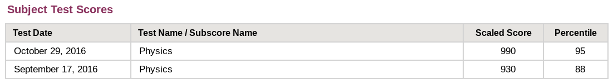
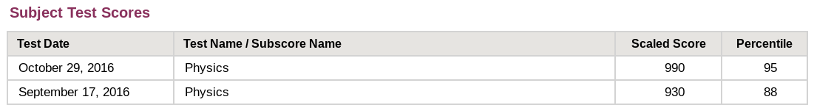

Tutoring
I love to learn and love to teach! Below I’ve detailed my experience and subjects. At this time I am only taking students local to Seattle. Please be in touch with any inquiries. Thank you!
Jump to: Experience | Subjects | My Test Prep Scores
Experience
I began instructing in 2010 with Revolution Prep as a SAT and ACT classroom instructor, eventually reaching over a thousand students at multiple high schools and centers in the SF Bay Area. I received accolades as a strong and understanding instructor when I worked at Revolution Prep and then later at the Elite Education Institute. Now at the University of Washington, I teach all levels of physics. My performance earned me a First Year Teaching Award. I also volunteer as a Software Carpentries instructor.
More detailed background is available on my resume and on my LinkedIn.
Subjects
I specialize in applied math and physics, as well as instructing comprehensive test prep. Below is a list of topics where I have teaching experience. Reach out if there’s something not on the list, so I can make a recommendation. Thanks!
Test Prep: ACT, SAT, SAT Subject Tests (Mathematics 2, Chemistry, Physics), AP Exams (Psychology, Calculus AB, Calculus BC, Statistics, Physics 1, Physics 2, Physics C), GRE, GRE Subject Test (Physics)
Mathematics: Geometry, Precalculus, Calculus, Multivariate Calculus, Ordinary Differential Equations, Partial Differential Equations, Linear Algebra, Probability, Statistics
Physics: Introductory Physics, Classical Mechanics, Electromagnetism, Statistical Mechanics, Thermodynamics, Quantum Mechanics
Computational: UNIX Shell (Bash), Git, Python, MATLAB, Mathematica
My Test Prep Scores
A lot of SAT/ACT Tutors report their test scores. Scores a clear benchmark for students and their parents to consider when seeking a qualified tutor. Because of this, I’m happy to share my results. These results are due to practice and training. The same experience that went into my becoming a strong tutor passed into my performance on these exams.
My most recent experience with standardized testing was in preparation the GRE and the GRE Physics Subject Test. These are the tests you take to get into PhD programs. Here were my results.
 
The GRE Physics exam has a maximum scaled score of 990. The reason I was able to score so well was because I applied the same training and disciplined preparation that I recommend to my tutoring students. What you see here was the payoff. What you don’t see is the reading, recitation, and practice exams, and the substantial improvement in score that came with it. The moral of the story? Training pays off.

The GRE Physics exam has a maximum scaled score of 990. The reason I was able to score so well was because I applied the same training and disciplined preparation that I recommend to my tutoring students. What you see here was the payoff. What you don’t see is the reading, recitation, and practice exams, and the substantial improvement in score that came with it. The moral of the story? Training pays off.